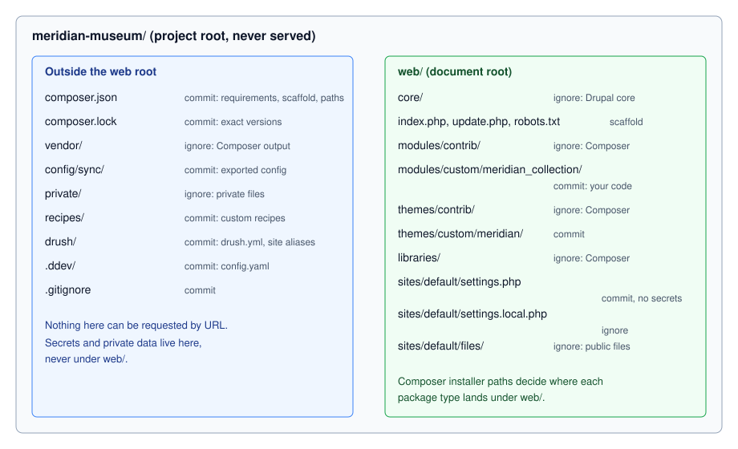

Project Layout and Local Development
|
This content was generated with the assistance of AI and should be verified against the official documentation before being relied on in production. |
A Drupal site is a Composer project, not a folder of files you download and unzip. The directory you commit to Git, the
directory the web server serves, and the directory Composer writes into are three different things, and mixing them up is
the most common source of "it works on my machine" problems. This page explains the tree that
drupal/recommended-project creates, what the Composer scaffold plugin adds to it, how to treat composer.lock, and how
to set up a local environment that is pleasant to develop in: development-only settings, Twig debugging, disabled caches,
Xdebug and a mail catcher. It was checked against the official documentation on 2026-10-30 and written for Drupal
11.4.x (11.4.11 at the check date), Drush 13 or 14 and PHP 8.3 or later. Drupal 10 reaches its end of life on
2026-12-09 (10.6 is its last minor), so a new site, including the Meridian Museum example used throughout this
sub-section, starts on Drupal 11. Drupal 12.0.0 is planned for the week of 2026-12-07 and requires PHP 8.5.
The page assumes you have already created a project; the installation steps themselves are in
Installation with Composer and DDEV. Background on Composer
itself is in Composer and packages in the PHP section, and the
finer points of settings.php are in settings.php and environments.
Why the tree is split in two
Older Drupal sites (up to Drupal 8.7) had index.php, core/ and sites/ in the same directory as everything else, so
the web server could in principle reach any file in the project. The drupal/recommended-project template instead uses a
relocated document root: only the web/ directory is the DocumentRoot, and composer.json, composer.lock,
vendor/ and your exported configuration stay one level above it. A request can never name a file outside web/, so
a misconfigured server cannot leak composer.lock (which reveals exact package versions to an attacker), a database dump
left in the project, or a private upload.
The alternative template, drupal/legacy-project, puts everything in the project root. It exists only for hosts that
cannot change their document root, it relies on the Vendor Hardening plugin to protect vendor/, and the package is
marked abandoned as of Drupal 11.4. Do not choose it for a new site. Hosts that force a document root of public_html
or docroot are handled by changing the web-root location and the installer-paths in composer.json (shown below),
not by switching templates.

The Composer project tree
The Meridian Museum site was created with the following command (Composer 2 and PHP 8.3 or later are required):
composer create-project drupal/recommended-project meridian-museum
cd meridian-museum
composer require drush/drushAfter installation and a few weeks of work the tree looks like this. The right-hand column says whether the path is committed to Git.
| Path | Contents and rules | Commit? |
|---|---|---|
|
The project’s requirements, patches, scaffold configuration and |
Yes |
|
The exact version and source reference of every package. See composer.lock discipline. |
Yes |
|
Every PHP dependency (Symfony, Twig, Guzzle, Drush, Composer’s autoloader). Recreated by |
No |
|
The document root. Everything the web server may serve. |
Partly |
|
Drupal core, installed by Composer from |
No |
|
Modules from drupal.org such as |
No |
|
Your own modules, for example |
Yes |
|
Contributed themes (Composer) and your own themes such as |
Custom only |
|
Installation profiles, rarely used when you build on the Standard profile. |
Custom only |
|
Third-party front-end libraries of type |
No |
|
|
Partly |
|
Recipes installed by Composer (type |
Custom only |
|
The configuration synchronisation directory. Not created by the template; you create it and point
|
Yes |
|
The private file system, outside the document root. See File system and private files. |
No |
|
Drush site aliases and |
Yes |
|
The DDEV project definition ( |
Yes |
Three points are easy to miss:
-
web/coreis a Composer artefact, not a source folder. Theinstaller-pathssection in the template’scomposer.jsonmaps package types to directories:type:drupal-coretoweb/core,type:drupal-moduletoweb/modules/contrib/{$name},type:drupal-custom-moduletoweb/modules/custom/{$name},type:drupal-themetoweb/themes/contrib/{$name},type:drupal-librarytoweb/libraries/{$name}andtype:drupal-recipetorecipes/{$name}. These paths are applied by thecomposer/installersplugin, which is why it must be listed inallow-plugins. -
Contrib is separated from custom. Git ignores
contrib, nevercustom. A module you wrote yourself belongs inweb/modules/custom/meridian_collection, and its first line of defence against being deleted by Composer is that Composer only manages thecontribdirectories. -
Recipes are not modules. A recipe installed with
composer require drupal/some_recipeis unpacked intorecipes/and applied once withphp core/scripts/drupal recipe ../recipes/some_recipe. Thedrupal/core-recipe-unpackplugin, required by the template, copies the recipe’s own requirements into yourcomposer.jsonso they are tracked. Recipes have no update path: after applying one, the site is ordinary Drupal. See Recipes.
The template’s composer.json for the 11.x line (condensed to the parts that shape the tree) is:
{
"name": "drupal/recommended-project",
"type": "project",
"require": {
"composer/installers": "^2.3",
"drupal/core-composer-scaffold": "^11",
"drupal/core-recipe-unpack": "^11",
"drupal/core-project-message": "^11",
"drupal/core-recommended": "^11"
},
"require-dev": {
"drupal/core-dev": "^11"
},
"conflict": {
"drupal/drupal": "*"
},
"minimum-stability": "dev",
"prefer-stable": true,
"config": {
"allow-plugins": {
"composer/installers": true,
"drupal/core-composer-scaffold": true,
"drupal/core-recipe-unpack": true,
"drupal/core-project-message": true
},
"sort-packages": true
},
"extra": {
"drupal-scaffold": {
"locations": {
"web-root": "web/"
}
},
"installer-paths": {
"web/core": ["type:drupal-core"],
"web/libraries/{$name}": ["type:drupal-library"],
"web/modules/contrib/{$name}": ["type:drupal-module"],
"web/themes/contrib/{$name}": ["type:drupal-theme"],
"drush/Commands/contrib/{$name}": ["type:drupal-drush"],
"web/modules/custom/{$name}": ["type:drupal-custom-module"],
"web/themes/custom/{$name}": ["type:drupal-custom-theme"],
"recipes/{$name}": ["type:drupal-recipe"]
}
}
}Notes on the packages:
-
drupal/core-recommendedis the package to require for core. It pins the exact versions of core’s dependencies, which gives every site the same tested combination. Since the 11.x line it no longer pins Guzzle, Twig or the Symfony polyfills, so a site can update those independently. Moving fromdrupal/core-recommendedto the plaindrupal/coreremoves the pinning altogether, which is rarely wise because dependencies then float to new minors. -
drupal/core-dev(arequire-devpackage) brings PHPUnit, PHPStan-related tooling and the Coder rules used for testing; production deployments install with--no-dev. See Automated testing. -
minimum-stability: devwithprefer-stable: truelets Composer accept a dev dependency only when no stable one exists. Prefer an explicit@alphaor@betasuffix on the one package that needs it over lowering stability for the whole project. -
The
conflictentry ondrupal/drupalstops Composer from installing the monolithic core package into the project. -
Drush is not part of the template. Install it in each project with
composer require drush/drush. Drush 13 serves Drupal 10.2 and later (and 11), and Drush 14 serves Drupal 11.3 and later (and 12). See Drush.
Changing the document root name
Some hosts require a document root called public_html or docroot. Change the location in two places, then run
composer install again so core and the scaffold files move:
{
"extra": {
"drupal-scaffold": {
"locations": {
"web-root": "docroot/"
}
},
"installer-paths": {
"docroot/core": ["type:drupal-core"],
"docroot/libraries/{$name}": ["type:drupal-library"],
"docroot/modules/contrib/{$name}": ["type:drupal-module"],
"docroot/modules/custom/{$name}": ["type:drupal-custom-module"],
"docroot/themes/contrib/{$name}": ["type:drupal-theme"],
"docroot/themes/custom/{$name}": ["type:drupal-custom-theme"]
}
}
}Every path in this page that begins with web/ then begins with your chosen name. Keep it in .gitignore, in the
DDEV docroot setting and in your deployment scripts too.
Composer scaffold
Some files must exist in the document root but are not part of any module: index.php, update.php, autoload.php,
.htaccess, robots.txt, web.config, and the defaults sites/default/default.settings.php and
sites/default/default.services.yml. They ship inside the drupal/core package, outside web/core's normal file
tree, and the drupal/core-composer-scaffold plugin copies them into web/ every time you run composer install or
composer update. Because these files are written by a plugin, not by you, they are usually listed in .gitignore in
projects that deploy by running Composer on the server, and committed in projects that deploy a built artefact. Choose
one policy and apply it consistently.
The behaviour is configured in the top-level extra.drupal-scaffold section:
-
locationsnames destination roots.web-rootis the only required one. -
allowed-packageslists, in order, the packages allowed to scaffold files (drupal/coreis implicitly allowed). Later entries win when two packages scaffold the same destination, and your owncomposer.jsonhas the highest priority. -
file-mappingmaps a destination to a mode: replace (a plain string path), append, prepend, or skip (false).
For the Meridian Museum, the editors want an extra Disallow rule in robots.txt (Drupal 11.4 recommends adding
Disallow: /search? to customised files), and the team keeps its own development.services.yml that scaffolding
must not touch:
{
"extra": {
"drupal-scaffold": {
"locations": {
"web-root": "web/"
},
"file-mapping": {
"[web-root]/robots.txt": {
"append": "assets/robots-meridian.txt"
},
"[web-root]/sites/development.services.yml": false
}
}
}
}Source: Using Drupal’s Composer Scaffold
Appending or prepending is preferable to excluding a file with false: an excluded file stops receiving updates, so a
security fix to .htaccess (for example the 11.4.11 and 10.6.20 change that swaps assert.active for
zend.assertions) would silently not reach you. If a scaffolded file must be patched, run the patch from a
post-drupal-scaffold-cmd entry under the top-level scripts section. There is no stand-alone scaffold command to
memorise; Composer runs the plugin as part of install and update.
A web server that serves Drupal from a subdirectory of the project, or a Windows host, matters here too. IIS support was
removed in Drupal 11.0, and Windows production hosting
is deprecated from 11.3. Use Apache 2.4.7 or later, or nginx, on Linux. From 11.3 a proxy or CDN in front of the site
must pass the HTMX headers (HX-Request, HX-Redirect) through unchanged.
composer.lock discipline
composer.json states what you want ("drupal/token": "^1.15"), and composer.lock records what was resolved: the
exact version and commit of every package, including transitive dependencies. Treat the pair as follows.
-
Commit
composer.lock. A teammate, the CI job and the production server then install the very same code withcomposer install. Without the lock file, each of them resolves versions afresh and gets different results. -
Install from the lock; update deliberately. On every machine except the one where you are performing an update, run
composer install(add--no-devand--optimize-autoloaderin production). Never runcomposer updateon a server. -
Update in a branch, one concern at a time. To move a single module use
composer update drupal/token --with-dependencies; for core usecomposer update "drupal/core-*" --with-all-dependencies. Commit the changedcomposer.jsonandcomposer.locktogether, then rundrush updatedb,drush config:exportand test. -
Use
composer update --lockafter editingcomposer.jsonby hand (for example a new patch entry) to regenerate the lock file’s metadata without upgrading packages. -
Do not mix update methods. Since Drupal 11.2 there is no supported way to update from the administration UI, and the module upload form was removed in 10.4/11.0: Composer is the only supported way to add or update code. Automatic Updates and Project Browser (contributed modules built on core’s Package Manager) still run Composer behind the scenes and need a writable codebase; Automatic Updates handles patch-level core updates only. Do not use them on a codebase you also deploy with Composer unless the workflow is agreed. See Automatic Updates and Project Browser and Updates, Composer and security advisories.
-
Quote constraints.
composer require 'drupal/ctools:^4.1'needs quotes in a shell, and double quotes are safer on Windows.
Typical daily commands for the Meridian Museum:
composer require 'drupal/token:^1.15' # add a module
composer require --dev 'drupal/devel:^5' # development-only helper
composer update drupal/token --with-dependencies # update one module
composer update "drupal/core-*" --with-all-dependencies # update core and its pinned dependencies
composer show drupal/core-recommended --all # list available versions
composer install --no-dev --optimize-autoloader # production install from the lock fileCommon pitfalls: a lock file produced on PHP 8.5 and installed on PHP 8.3 fails because Composer checks the platform; set
config.platform.php to the production PHP version so resolution always targets it (older books showed a
platform.php of 8.0.7, which is below Drupal 10’s own minimum, so copy the value from your own server instead).
A merge conflict in composer.lock is never fixed by hand: resolve composer.json, then run composer update --lock.
And remember that a package replaced by a patch (the cweagans/composer-patches plugin, with patches listed under
extra.patches) is re-patched on every composer install, so a failing patch breaks the build, which is the intended
signal.
Settings files in web/sites/default
The installer creates web/sites/default/settings.php by copying default.settings.php, and the first request after
installation. The directory also holds services.yml (copied from
default.services.yml) and files/, the public file directory. Once the site is installed, make settings.php and the
directory non-writable (chmod 444 web/sites/default/settings.php, chmod 555 web/sites/default) in production; the
Status report warns while they are writable. Do the opposite before running composer install, which needs to write to
the directory (chmod u+w web/sites/default).
Three files cooperate to keep configuration per environment:
-
settings.phpis committed and contains everything common to all environments: the config sync directory, the private path, trusted hosts and reading secrets from the environment. -
settings.local.phpis not committed. It contains developer overrides and is loaded last by anincludeat the end ofsettings.php. -
development.services.ymllives inweb/sites/and is a container definition file, enabled fromsettings.local.php.
A reasonable committed settings.php tail for the Meridian Museum follows. It contains no secrets: values come from the
environment (DDEV, a container platform or a deployment tool provides them).
<?php
// Common to every environment.
$settings['config_sync_directory'] = '../config/sync';
$settings['file_private_path'] = '../private';
$settings['hash_salt'] = getenv('DRUPAL_HASH_SALT') ?: '';
$settings['trusted_host_patterns'] = [
'^meridian-museum\.ddev\.site$',
'^www\.meridianmuseum\.example$',
];
$databases['default']['default'] = [
'driver' => 'mysql',
'database' => getenv('DRUPAL_DB_NAME') ?: 'db',
'username' => getenv('DRUPAL_DB_USER') ?: 'db',
'password' => getenv('DRUPAL_DB_PASSWORD') ?: '',
'host' => getenv('DRUPAL_DB_HOST') ?: 'db',
'port' => '3306',
'prefix' => '',
'namespace' => 'Drupal\\mysql\\Driver\\Database\\mysql',
'autoload' => 'core/modules/mysql/src/Driver/Database/mysql/',
];
// Developer overrides, never committed.
if (file_exists($app_root . '/' . $site_path . '/settings.local.php')) {
include $app_root . '/' . $site_path . '/settings.local.php';
}The setting names are explained in settings.php and environments.
A hash_salt left empty makes Drupal refuse to run, which is the safe failure; a salt committed to a public repository
weakens one-time login links, CSRF tokens and form tokens. When DDEV manages the file (the default), it writes
settings.ddev.php, adds an include for it to settings.php and sets the database host to db; those pieces are
guarded so they do nothing outside DDEV, and the generated file is Git-ignored.
Local settings: settings.local.php and development.services.yml
Core ships two example files in web/sites/: example.settings.local.php and development.services.yml. Copy the first
to web/sites/default/settings.local.php, and make sure the include block in settings.php (above) is active.
cp web/sites/example.settings.local.php web/sites/default/settings.local.phpThe example already enables the development container file and keeps caches enabled until you edit it, which is the
point: settings.local.php is where per-developer choices live.
<?php
// web/sites/default/settings.local.php -- local only, not committed.
$settings['container_yamls'][] = DRUPAL_ROOT . '/sites/development.services.yml';
// Do not generate the performance-sensitive aggregated assets while theming.
$config['system.performance']['css']['preprocess'] = FALSE;
$config['system.performance']['js']['preprocess'] = FALSE;
// Show errors on screen locally (ERROR_REPORTING_DISPLAY_ALL).
$config['system.logging']['error_level'] = 'verbose';
// Do not let test modules appear in the Extend page.
$settings['extension_discovery_scan_tests'] = FALSE;
// Optional: use the null cache backend for the render-related bins.
$settings['cache']['bins']['render'] = 'cache.backend.null';
$settings['cache']['bins']['page'] = 'cache.backend.null';
$settings['cache']['bins']['dynamic_page_cache'] = 'cache.backend.null';and web/sites/development.services.yml:
parameters:
http.response.debug_cacheability_headers: true
services:
cache.backend.null:
class: Drupal\Core\Cache\NullBackendFactoryhttp.response.debug_cacheability_headers makes Drupal send the X-Drupal-Cache-Tags, X-Drupal-Cache-Contexts and
X-Drupal-Cache-Max-Age response headers, which is the quickest way to debug render cache metadata (see
Render API and cache metadata).
What changed in 10.3: do not set Twig options in services.yml
Older books, and any tutorial copied from them, put Twig options in development.services.yml:
# Pre-10.3 approach -- do not use any more
parameters:
twig.config:
debug: true
auto_reload: true
cache: falseThe drupal.org page on disabling caches describes this as the method for Drupal 10.2 and older: from 10.3, a
twig.config entry in services.yml or a services file overrides the administration setting, so the checkbox on the
development settings form appears to do nothing. Modernizing Drupal 10 Theme Development (2023) and the Drupal 10
Development Cookbook (2023) show the services-file approach because they were written for 10.0 and 10.1; since 10.1
there is a development settings form, and since 10.3 the supported method is that form or Drush. Keep
development.services.yml for the null cache backend and the cacheability headers, and leave Twig settings out of it.
The same applies to CSS and JavaScript aggregation: control it with configuration (system.performance), not with
a services file.
The development settings form
Since Drupal 10.1 the page at /admin/config/development/settings (menu: Configuration > Development > Development
settings) offers three switches that previously required editing files:
-
Twig development mode. Turns on Twig debug (
dump()output, the HTML comments that list template suggestions and the file that rendered each fragment) and disables the Twig template cache, with automatic reload when a template changes. Both options are checked by default once the mode is on. -
Disable Twig cache separately, when you want suggestions comments off but fresh templates.
-
Do not cache markup. Disables the render cache, the dynamic page cache and the page cache by routing those bins to the null backend.
The values are stored in the key_value table (in a development_settings collection since 10.3; in the state table
in 10.1 and 10.2), not in configuration. They are therefore never exported with drush config:export and never reach
staging or production, which is exactly what you want from a development switch. They are also per database: a fresh
database import from production turns them off again.
Drush provides a one-command version in Drush 13.6 and later (PHP 8.3 or later):
ddev drush theme:dev on # Twig debug on, caches off, CSS/JS aggregation off, caches cleared
ddev drush theme:dev off # reverse all of thatPitfalls that cost time:
-
Anonymous visitors still receive cached pages. Log in to see the effect of disabled caches, or use a private browser window with a session.
-
Browser,
sendfileand OPcache can still serve stale files. Disable the browser cache in developer tools, turn offsendfilein Apache or nginx, and see OPcache, JIT and performance for OPcache timestamps. -
Never enable these in production. Disabled caches multiply the response time many times over, and Twig debug HTML comments reveal the module and theme file paths.
-
Twig
dump()andkint()output needs the development switch or the Devel module. In production thedump()function does nothing when Twig debug is off. See Twig templates and debugging.
DDEV for Drupal
DDEV runs the web server, PHP, the database and helper services in Docker containers and mounts your project into them,
so the whole team shares one environment definition. The Drupal 11 quick start uses the drupal11 project type (Drupal
10 has drupal10, and drupal12 is available for the unreleased Drupal 12):
mkdir meridian-museum && cd meridian-museum
ddev config --project-type=drupal11 --docroot=web
ddev start
ddev composer create-project drupal/recommended-project
ddev composer require drush/drush
ddev drush site:install --account-name=admin --account-pass=CHANGE_ME -y
ddev launchSource: DDEV quickstart: Drupal
ddev config writes .ddev/config.yaml, which you commit. A pinned configuration for the Meridian Museum is:
# .ddev/config.yaml
name: meridian-museum
type: drupal11
docroot: web
php_version: "8.3"
webserver_type: nginx-fpm
database:
type: mariadb
version: "10.11"
nodejs_version: "22"
composer_version: "2"
xdebug_enabled: falseSource: DDEV configuration options
Match php_version and the database to production. Drupal 11 needs PHP 8.3 or later; MariaDB 10.11 is a supported
choice for 11.x, whereas the Drupal 10 Development Cookbook (2023) used MariaDB 10.3, which Drupal 10 and 11 no longer
support. Drupal 12 requires PHP 8.5, MariaDB 10.11 and PostgreSQL 18 or 19 according to the requirements page (the
beta 1 release notes give a different PostgreSQL value, so check the final release notes before upgrading
the container). Put Node.js in nodejs_version only if the theme has a build step; see
Front-end tooling. How DDEV compares with a Docker Compose setup is covered in
Docker and containers.
Day-to-day DDEV commands
ddev start # start containers
ddev stop # stop them, keep data
ddev describe # URLs, ports, database credentials
ddev drush cr # run Drush inside the web container
ddev composer install # run Composer inside the container, with its PHP version
ddev exec php core/scripts/drupal recipe ../recipes/meridian_events
ddev snapshot # database snapshot before risky work
ddev export-db --file=backup.sql.gz
ddev launch $(ddev drush uli) # open the site logged in as user 1 (a one-time link)Run Composer and Drush through ddev so that the PHP version and extensions match the container, not whatever your
laptop has installed. The drush uli link is a one-time login URL and is sensitive until used, so do not paste it into
chat or issue trackers.
Xdebug in DDEV
Xdebug is installed in the web container but disabled by default because it slows requests down noticeably. Switch it on only while debugging:
ddev xdebug on # enable until the project is restarted
ddev xdebug status
ddev xdebug off
ddev xdebug toggleSource: DDEV: Step debugging with Xdebug
Your IDE must listen on Xdebug’s default port 9003. In PhpStorm, enable "Start Listening for PHP Debug Connections", set a
breakpoint, load a page, and map the project directory to /var/www/html in the container; map the whole project (not
just web/) so breakpoints in vendor/ work. In VS Code, install the PHP Debug extension and use the "Listen for
Xdebug" launch configuration with a path mapping from ${workspaceFolder} to /var/www/html. If another process
already owns port 9003, create .ddev/php/xdebug_client_port.ini with the line xdebug.client_port=9000 and point the
IDE at 9000. ddev utility xdebug-diagnose is an experimental helper that checks the configuration and network path.
Drupal-specific tips:
-
The best places for breakpoints are
web/core/lib/Drupal/Core/Routing/for routing problems,web/core/lib/Drupal/Core/Render/Renderer.phpfor render arrays, and your own controllers and hook classes inweb/modules/custom/meridian_collection/src. -
Composer disables Xdebug by default; set
COMPOSER_ALLOW_XDEBUG=1to debug Composer plugins and the scaffold step. -
Drush commands are CLI requests. Run
ddev xdebug on, thenddev drush meridian:sync, and the IDE stops in the command class. -
Cached containers and compiled Twig templates move code to temporary files, so a breakpoint in a Twig-generated class may not fire; put
xdebug_break();in the code instead, or clear caches first. -
PHPUnit runs under Xdebug the same way:
ddev xdebug onand thenddev exec vendor/bin/phpunit -c web/core web/modules/custom/meridian_collection/tests. -
Never leave Xdebug listening on a shared development server or a staging site: it allows remote code execution to whoever can reach the debug port.
General PHP debugging is covered in Debugging and profiling.
Mailpit in DDEV
Drupal sends password resets, contact form notifications and workflow emails. During development you want to read them
without sending any to real addresses. DDEV includes Mailpit, which receives all mail that PHP sends from the
container (the same mechanism that sendmail uses) and shows it in a web interface at the project’s port 8026, for
example https://meridian-museum.ddev.site:8026. Open it with:
ddev mailpitSource: DDEV: Developer tools, Mailpit
For Symfony Mailer and Symfony Mailer Lite, DDEV’s generated settings.ddev.php already points the transport at Mailpit, so no
configuration is needed. For an SMTP module, set the server to localhost and the port to 1025. Mailpit does not
capture mail when the site is configured to use a real SMTP server or an external provider, so remove such
configuration (or override it in settings.local.php) locally to avoid sending to real people. Drupal’s Mail System
and its email theming are covered in Email and error pages theming.
If you use plus-addressing in test accounts (editor+1@example.test), Mailpit tags messages by the part after the plus; disable
that with ddev config global --web-environment-add=MP_TAGS_DISABLE=plus-addresses.
.gitignore
Commit the files you author and ignore everything Composer or Drupal generates or writes at runtime. A .gitignore for the
Meridian Museum:
# Composer-managed code
/vendor/
/web/core/
/web/modules/contrib/
/web/themes/contrib/
/web/profiles/contrib/
/web/libraries/
/recipes/*/
!/recipes/meridian_events/
/drush/Commands/contrib/
# Scaffold files (omit these lines when you commit them)
/web/.htaccess
/web/index.php
/web/update.php
/web/autoload.php
/web/robots.txt
/web/web.config
/web/sites/default/default.settings.php
/web/sites/default/default.services.yml
/web/sites/example.settings.local.php
/web/sites/example.sites.php
# Environment-specific and runtime
/web/sites/*/settings.local.php
/web/sites/*/settings.ddev.php
/web/sites/*/files/
/private/
/web/sites/simpletest/
# Tooling
/node_modules/
/.idea/
/.vscode/
*.sql
*.sql.gz
.DS_StoreDetails that matter:
-
Never commit
settings.phpwith credentials orhash_salt. Commit it only after moving secrets into the environment, as above. If one was committed in the past, rotate the credentials and the salt; removing the file from history is not enough. -
Do not commit
.sqldumps orfiles/. They contain personal data and sessions. -
Commit
config/sync. It is the deployable description of the site and is what staging and production import. See Deployment and CI/CD. -
Do commit
composer.lock. A.gitignorecopied from a tutorial sometimes lists it by mistake. -
.ddev/.gitignoreis generated by DDEV and ignores its own temporary files; commit.ddev/config.yamland add-ons but leave the generated ignore file alone.
Common errors
| Symptom | Cause and fix |
|---|---|
|
The directory was made read-only after installation. Run |
The installer keeps asking for database settings |
|
Twig debug comments or fresh templates do not appear |
Anonymous session, the development form is off, or a leftover |
Changes to a module’s |
The container is cached. Run |
|
The document root is the project root instead of |
Mail arrives at a real address from a development site |
A real SMTP or provider configuration was imported from production. Override it in |
Breakpoints are never hit |
Xdebug is off ( |